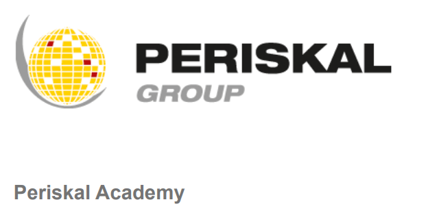

Leerplatform
Periskal Leer Platform
Een bijdrage aan een leerplatform voor scheepvaart- en maritieme bedrijven, waarbij digitale leerinhoud op een toegankelijke manier beschikbaar wordt gemaakt.

Context
Dit project richt zich op digitale ondersteuning voor opleidingen binnen de maritieme sector. De applicatie helpt om leerinhoud en gebruikerservaring op een duidelijke manier samen te brengen, zodat gebruikers vlotter door het materiaal kunnen werken.
Mijn bijdrage
Ik werkte mee aan onderdelen van het platform en kreeg zo meer ervaring met het bouwen binnen een bestaande codebase. Dat vraagt om nauwkeurig lezen, consistent werken en rekening houden met bestaande keuzes, zodat nieuwe aanpassingen goed aansluiten op de rest van de applicatie.